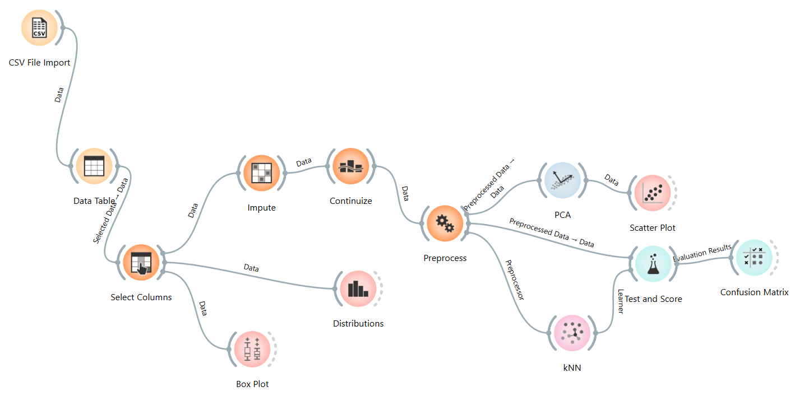
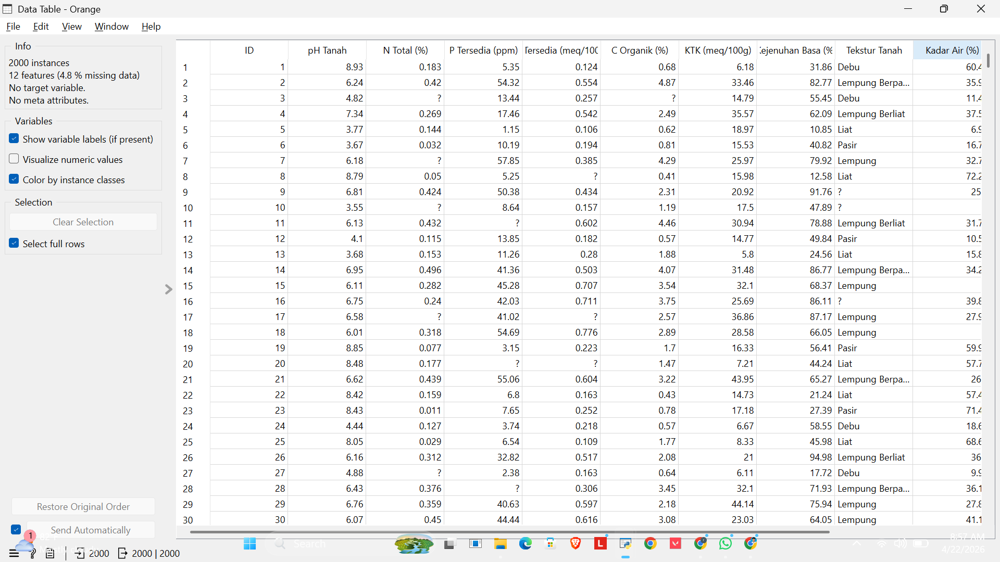
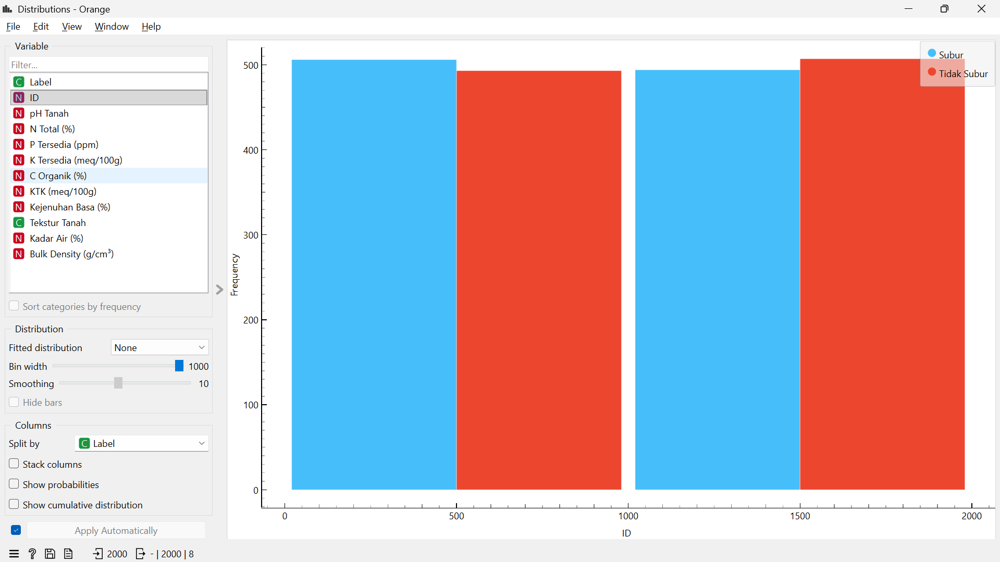
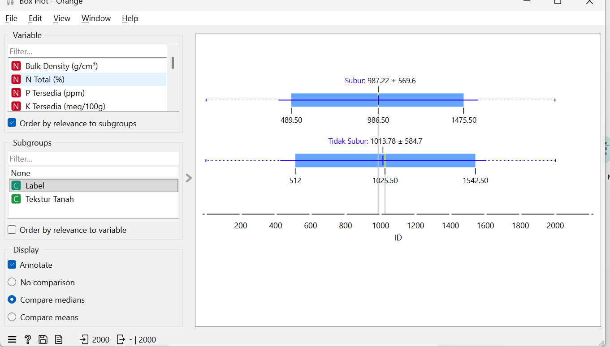
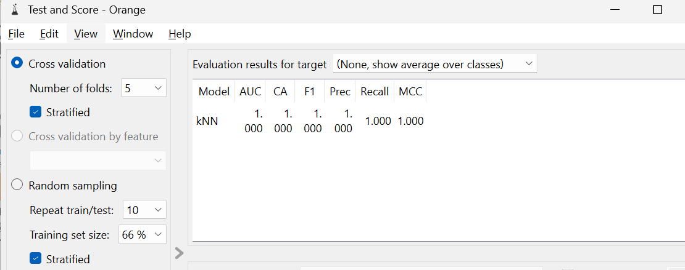
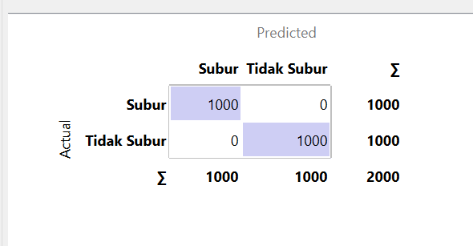
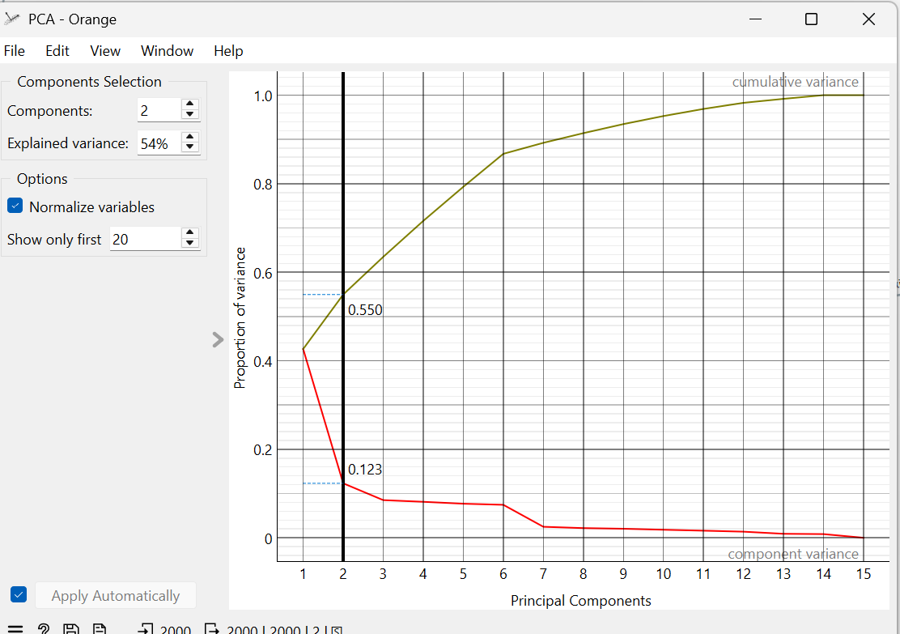
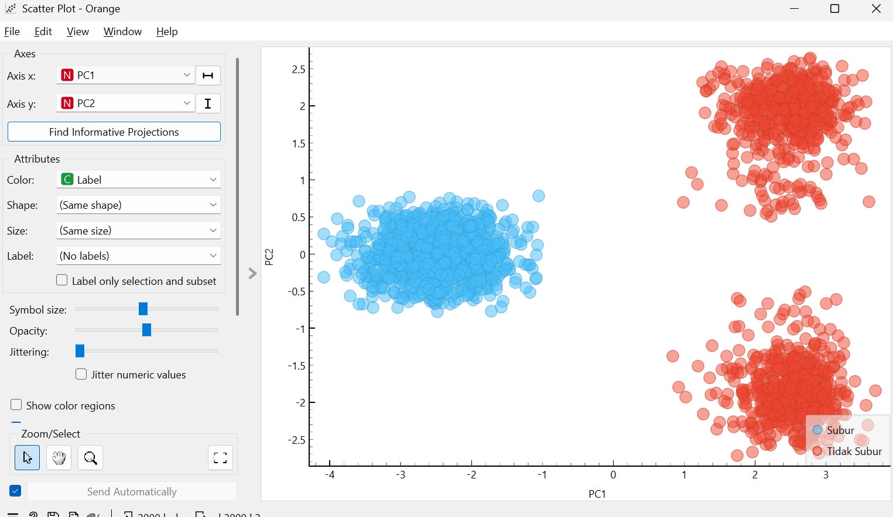

Analisis Data Kesuburan Tanah#
1. Pendahuluan#
Pada tugas ini dilakukan analisis klasifikasi untuk menentukan tingkat kesuburan tanah menggunakan algoritma k-Nearest Neighbor (kNN) pada perangkat lunak Orange. Workflow yang dibangun mencakup tahapan mulai dari input data, preprocessing, pemodelan, hingga evaluasi hasil.
Workflow Orange#

2. Import Data#
Dataset dimasukkan menggunakan widget CSV File Import, kemudian ditampilkan melalui Data Table untuk memastikan bahwa:
Struktur data terbaca dengan benar
Nama kolom sesuai
Terdapat atau tidaknya missing value
Langkah ini penting untuk memastikan data siap diproses ke tahap berikutnya.
Contoh Data#

3. Seleksi Atribut (Select Columns)#
Pada tahap ini digunakan widget Select Columns untuk menentukan peran masing-masing atribut dalam dataset:
Target: Label (kelas kesuburan tanah)
Meta: ID
Features: seluruh atribut lainnya seperti pH Tanah, N Total, P Tersedia, dll
Langkah ini penting agar model mengetahui variabel mana yang akan diprediksi.
4. Eksplorasi Data#
Sebelum masuk ke tahap pemodelan, dilakukan eksplorasi data menggunakan:
4.1 Distributions#
Digunakan untuk melihat distribusi setiap fitur.

4.2 Box Plot#
Digunakan untuk:
melihat sebaran data
mendeteksi outlier
membandingkan distribusi antar kelas
Tahap ini membantu memahami karakteristik data sebelum dilakukan preprocessing.
Eksplorasi Data#

5. Preprocessing Data#
5.1 Impute (Menangani Missing Value)#
Widget Impute digunakan untuk mengisi nilai yang hilang:
Data numerik → diisi dengan rata-rata (mean)
Data kategorikal → diisi dengan nilai yang paling sering muncul (most frequent)
Hal ini dilakukan karena model tidak dapat memproses data yang memiliki nilai kosong.
5.2 Continuize (Mengubah Data Kategorikal)#
Widget Continuize digunakan untuk mengubah atribut kategorikal seperti Tekstur Tanah menjadi bentuk numerik.
Hal ini penting karena:
Algoritma kNN berbasis jarak
Perhitungan jarak hanya dapat dilakukan pada data numerik
5.3 Normalize (Normalisasi Data)#
Normalisasi dilakukan untuk menyamakan skala antar fitur.
Alasan:
kNN menggunakan perhitungan jarak
fitur dengan skala besar dapat mendominasi hasil jika tidak dinormalisasi
Dengan normalisasi, semua fitur memiliki kontribusi yang seimbang.
6. Model k-Nearest Neighbor (kNN)#
Model klasifikasi dibangun menggunakan widget kNN dengan parameter:
Jumlah tetangga (k) = 5
Distance metric = Euclidean
Algoritma kNN bekerja dengan cara:
mencari k tetangga terdekat
menentukan kelas berdasarkan mayoritas tetangga tersebut
7. Evaluasi Model#
Evaluasi dilakukan menggunakan widget Test & Score dengan metode:
10-Fold Cross Validation#
Data dibagi menjadi 10 bagian, kemudian:
9 bagian digunakan untuk training
1 bagian digunakan untuk testing
proses diulang hingga semua data menjadi data uji
Metode ini digunakan agar hasil evaluasi lebih stabil.
Hasil Evaluasi Model#

8. Metrik Evaluasi#
Beberapa metrik yang digunakan untuk menilai performa model:
Accuracy → persentase prediksi yang benar
Precision → ketepatan prediksi per kelas
Recall → kemampuan menemukan seluruh data dalam kelas
F1 Score → kombinasi antara precision dan recall
9. Confusion Matrix#
Widget Confusion Matrix digunakan untuk melihat detail hasil klasifikasi, yaitu:
jumlah prediksi benar
jumlah kesalahan prediksi antar kelas
Sehingga dapat diketahui pola kesalahan model.
Confusion Matrix#

10. Visualisasi Data#
10.1 PCA (Principal Component Analysis)#
Digunakan untuk mereduksi dimensi data menjadi dua dimensi.

10.2 Scatter Plot#
Digunakan untuk memvisualisasikan hasil PCA sehingga dapat terlihat:
pola distribusi data
pemisahan antar kelas

#11. Kesimpulan#
Workflow yang dibangun telah mencakup seluruh tahapan utama dalam proses data mining, yaitu:
import data
preprocessing
pemodelan
evaluasi
visualisasi
Model kNN yang digunakan mampu melakukan klasifikasi tingkat kesuburan tanah berdasarkan parameter fisik dan kimia tanah.